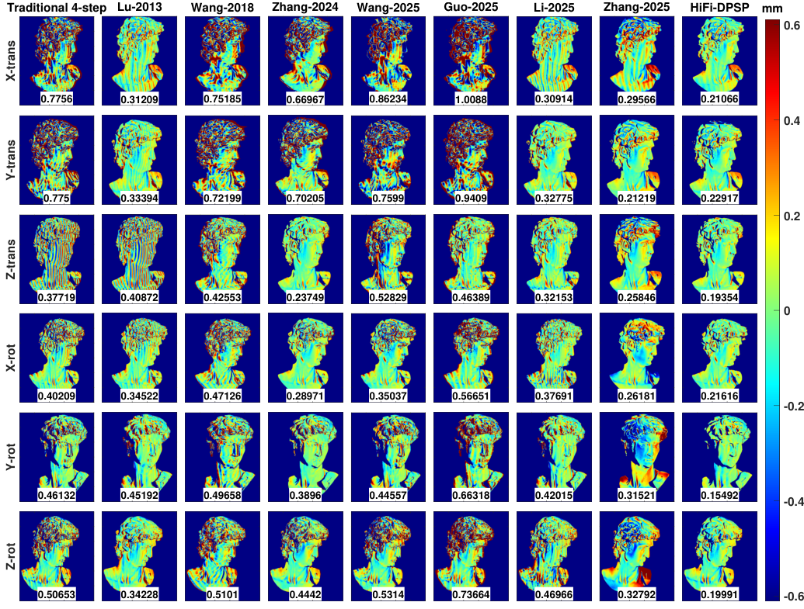
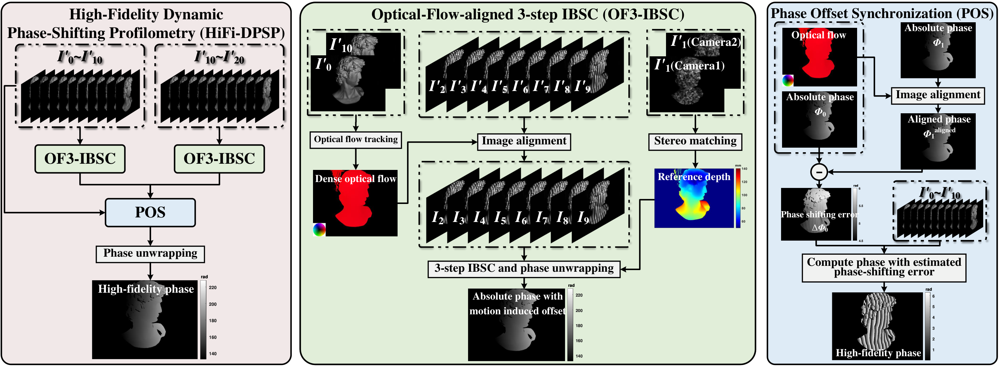
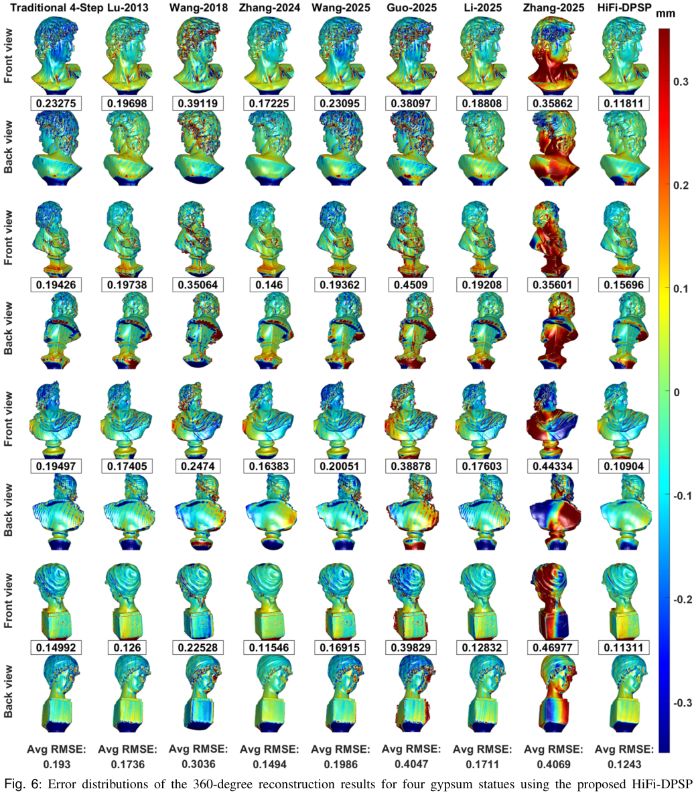
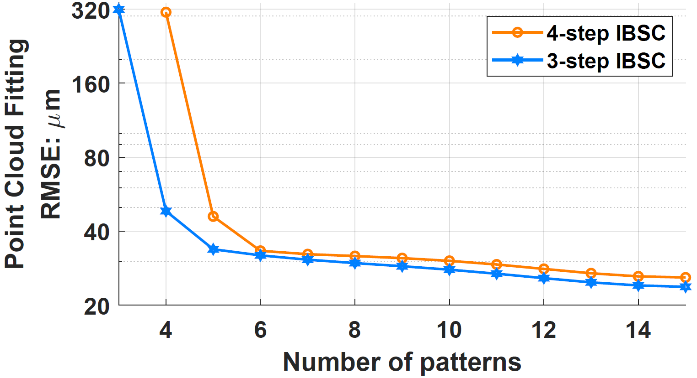
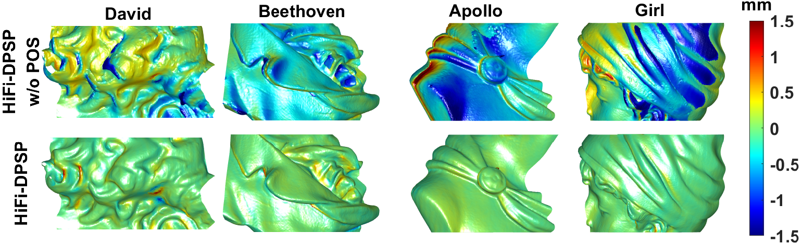
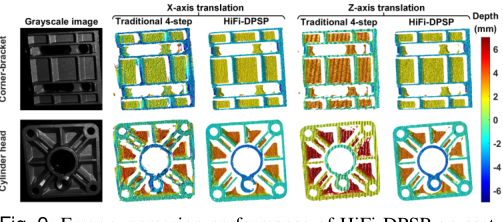
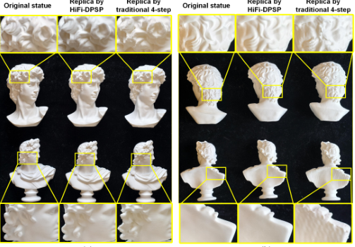

6-DoF Dynamic Motion
Under six rigid-motion conditions, HiFi-DPSP produces lower-error reconstructions than traditional four-step PSP and comparison methods, with an average RMSE of 0.201 mm in the reported evaluation.

Anonymous Project Page
Code release and supplementary project page
High-precision three-dimensional (3D) reconstruction plays a fundamental role in modern industrial informatics, where phase-shifting profilometry (PSP) has been widely used for high-accuracy 3D measurement. However, due to its multi-frame projection mechanism, PSP is vulnerable to object motion, which can lead to ghosting artifacts, ripple-like distortions, and phase offsets. In particular, phase offsets can severely compromise multi-view geometric consistency and cause duplicate surfaces in full-profile reconstruction.
To address these issues, this work proposes a High-Fidelity Dynamic Phase-Shifting Profilometry (HiFi-DPSP) framework and establishes an in-motion 360-degree reconstruction pipeline. The framework integrates Optical-Flow-aligned 3-step Image-sequential Binomial Self-Compensation (OF3-IBSC) to suppress ghosting artifacts and ripple-like distortions, and Phase Offset Synchronization (POS) to compensate for motion-induced phase offsets, thereby preserving multi-view geometric consistency and preventing duplicate surfaces.
Experimental results demonstrate that HiFi-DPSP achieves the lowest average RMSE among the compared methods in both single-view 6-DoF motion experiments and 360-degree reconstruction experiments with continuous object rotation, while completing a full circumferential scan of a 15 cm x 10 cm x 10 cm object within only 2 seconds.

HiFi-DPSP contains two core modules. OF3-IBSC compensates ghosting artifacts and ripple-like distortions. POS estimates and corrects motion-induced phase offsets for multi-view geometric consistency.
Under six rigid-motion conditions, HiFi-DPSP produces lower-error reconstructions than traditional four-step PSP and comparison methods, with an average RMSE of 0.201 mm in the reported evaluation.

During continuous object rotation, POS removes phase-offset-induced duplicate surfaces and improves multi-view consistency. The reported average RMSE for HiFi-DPSP is 0.124 mm across four statue scenes.


3-step IBSC achieves lower fitting error with the same number of patterns.

POS preserves multi-view consistency and reduces duplicate surface artifacts.

HiFi-DPSP suppresses motion-induced depth errors on cast-aluminum components.

Replicas reconstructed by HiFi-DPSP better preserve local geometric details.
The released MATLAB demo includes calibration matrices, example data, precomputed optical flow and disparity maps, and reconstruction scripts.
HiFi-DPSP/
|-- CalibMat/
|-- Code/
| |-- MainScript.m
| |-- Func_OF3IBSC.m
| |-- Func_POS.m
| |-- Func_RenderTriSurface.m
| `-- ...
|-- Data/
| |-- X-trans/
| |-- Z-trans/
| `-- Y-rot/
|-- FigFramework.png
`-- MainScript_preview.pngOptical flow and stereo disparity are external precomputed inputs. Optical flow is estimated by RAFT [1], and stereo disparity is estimated by RAFT-Stereo [2]. Their implementations are not included in the MATLAB demo.